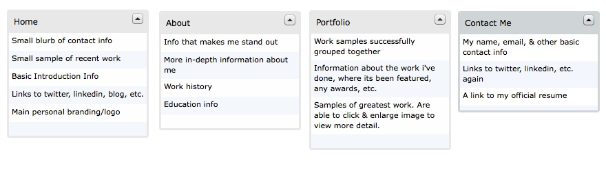
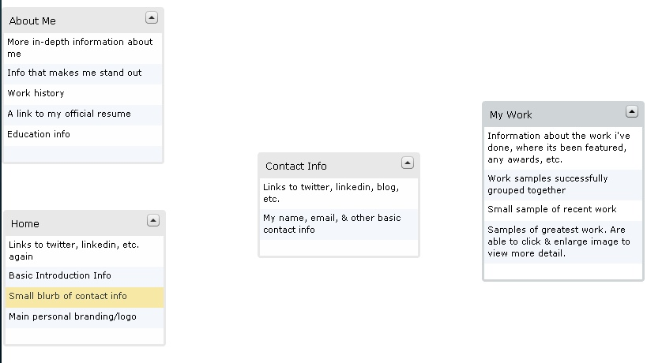
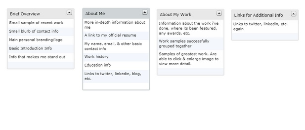
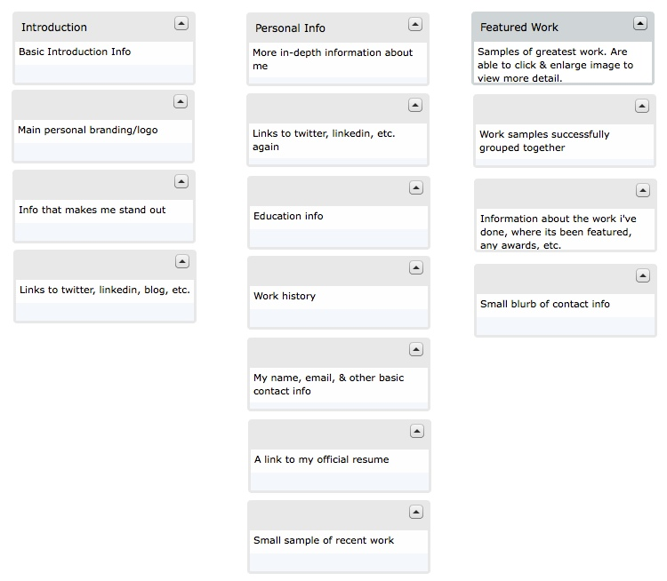

Introduction
For our final project website, I am interested in working on a more complete personal site that I can use as a sort of online portfolio. I have been thinking about a website such as this, and have been trying to figure out my own personal branding for some time now. I have never had ample amounts of time to start this project, so I am definitely interested in beginning to make this a reality. In my field, it is a really important part of an application, almost more so than a resume. I really hope to come up with an overall design that I can then use for a resume design, business cards, etc.
Results
This card sorting exercise was definitely easier for all the participants, because it is something that they have all seen before. The idea of a personal website/portfolio is not something new, so coming up with the items for participants to sort was pretty broad. Because of that, I simply give the participant the items, and asked them to group them and then name the category whatever they think it should be. I knew this was going to be easier, so I was curious if they would choose anything different for the main names/groupings from what I thought up in my head. The participants were again a 22 year-old woman, and 33 year-old woman, and a 50 year-old man.
Here is my sorting, and they way I envisioned the topics/content to be:
As expected, all participants had a much easier time with this, and their sorting/topic naming was almost exactly the same as mine.
22 year-old woman:
33 year-old woman:
50 year-old man:
Conclusion
Overall, the participants had an easy time with this card sorting. It took them less time to complete the sorting, which I'm sure is because there were fewer items and they were easier to comprehend. I was kind of stumped when doing this exercise on how to make it harder/how to stump the participants and get different results like I did for the foldable.me exercise. Like I said before, it was easy because this is something they have all seen/had experience with before. All the participants were different people I work with, with different job titles and experience, but their ease at completing this was the same. I wish I would have thought of I way to make it harder, but at least I know that the overall navigation that we expect from a site like this is similar no matter who is creating it.